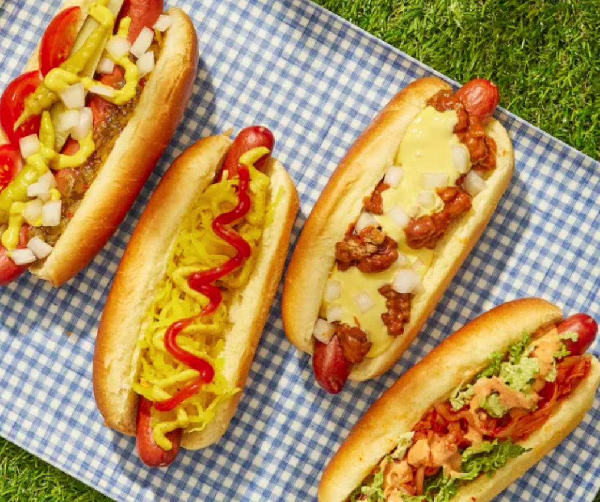

How to make hotdogs
Ingridiens:

- 2 cups finely shredded cabbage
- 1/2 cup mayonnaise
- 8 all-beef hot dogs, partially split
- 1 cup shredded sharp cheddar
- 2 cups cilantro sprigs
- 1 small onion, thinly sliced
Directions:
- In a large bowl, toss the cabbage, scallion and lime juice; season with salt and pepper. In a mortar, pound the sesame seeds until crushed and transfer to a small bowl. Stir in the mayonnaise and season with salt.
- In a nonstick skillet, heat 1 tablespoon of oil. Add the kimchi and cook over high heat until browned all over, 3 minutes.
- Light a grill. Brush the insides of the buns with oil and grill over moderately high heat, cut side down, until crisp, 20 seconds. Turn and grill for 20 seconds longer. Spread the cut sides with the sesame mayonnaise.
- Grill the hot dogs over moderately high heat until nicely charred all over, 3 minutes. Tuck the hot dogs into the buns with the kimchi and cheddar. Top with the cabbage salad, romaine, onion and cilantro sprigs. Drizzle a little Sriracha on top and serve.
More recepies